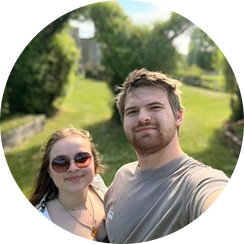

Les 7 témoignages
Maxim delbrassinne
Il y a 2H - public
Pas mal dans l’ensemble, mais il faudrait revoir certaines règles. On peut perdre des étoiles trop facilement juste à cause d’un malentendu ou d’une blague mal comprise et derrière ça peut même nous bloquer l’accès à certains endroits. Je me suis déjà retrouvé refusé à l’entrée d’un bar juste à cause de ma note alors que je n’avais rien fait de grave.
Noa Ghillain Cruz
Il y a 5H - public
Cette extension a changé ma vie! Il y a encore 3 semaines j’avais plus aucun amis, j’étais casanier, je sortais de chez moi uniquement pour les courses. mais aujourd’hui grâce à elle j’ai enfin pu sortir et trouver des potes qui ont les mêmes centres d'intérêt que moi. Je me sens enfin épanoui. Je recommande cette extension à toutes les personnes qui se sentent seules dans leur peau.

Cécile Radoux
Il y a 30minutes - public
Une catastrophe… On transforme les interactions humaines en système de points. On ne parle plus librement, on joue un rôle pour ne pas perdre des étoiles et au final plus personne n’est sincère.
Célia Bargoin
Il y a 1H - public
J’aime bien l’idée mais ça dépend vraiment des gens autour de toi… Certains sont cool et respectueux mais d’autres utilisent le système d’étoiles comme moyen de pression. On finit par faire attention à chaque mot et ça enlève un peu le naturel des échanges.
Briac Dannequin
Il y a 10minutes - public
On peut même perdre sa maison à cause de cette appli… avec une note trop basse tu deviens indésirable partout et même ton propriétaire peut refuser de te garder. Je me suis retrouvé avec des avertissements juste à cause de mon nombre d’étoiles et au final on m’a clairement fait comprendre que je n’étais plus le bienvenu. Tout ça pour une note basée sur des avis de gens qui ne te connaissent même pas.
William Tensi
Il y a 2H - public
Je regrette profondément de l’avoir installée… au début c’est ludique puis ça devient un enfer. On commence à surveiller qui nous regarde, qui nous note, pourquoi… ça rend parano.
Bruna Cardoso
Il y a 3H - public
Concept intéressant mais encore trop instable… Au début tout se passe bien puis on commence à comprendre que certaines personnes notent sans raison.


Terminus tous le monde descends
Merci d’avoir lu mon projet sur l’extension de dating. Les informations n’ont pas toujours été faciles à recueillir, mais je suis satisfait de ce que j’ai pu apporter.
J’espère que nous nous reverrons bientôt pour un prochain voyage.